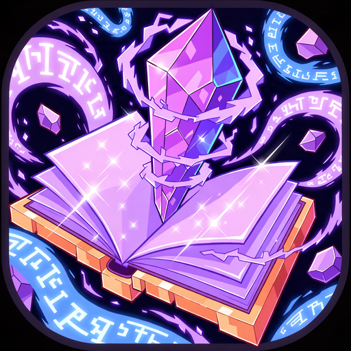
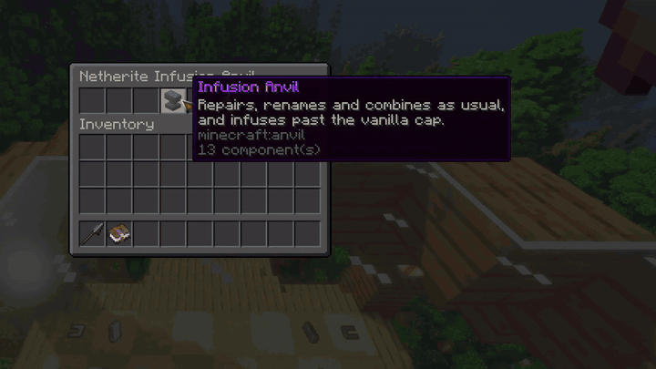
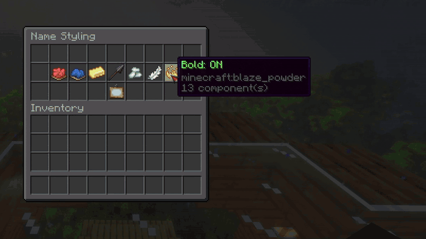

Match books
Use two books with the same single enchantment and level.

CUSTOM ENCHANTMENTS · BOUNDED UNSAFE PROGRESSION
Build your own enchantments, and make endgame gear exciting without letting a few levels wreck your server economy.
Previously released as Overbooked. Existing installs upgrade in place — the old data folder is adopted automatically and /ob still works.
THE LOOP
Put two identical, single-enchantment books of the same level in an anvil. Once they reach the vanilla maximum, they combine into the next level.
Use two books with the same single enchantment and level.
Each unsafe tier uses two books and costs progressively more XP.
Configured limits stop the upgrade before it becomes a server problem.
Sharpness V + Sharpness V → Sharpness VIDefault tier costs are 12, 20, 32, and 48 levels. Every cap and cost is configurable in config.yml.
YOUR SERVER, YOUR FLOW
DEFAULT
Set custom-station.enabled: false. Every normal anvil can create and apply legal unsafe enchantments. No resource pack, special recipe, or extra menu needed.
OPTIONAL
Set custom-station.enabled: true. Players craft a Netherite Infusion Anvil with a dedicated normal-anvil, unsafe-infusion, and name-styling interface.
ENHANCED MODE
The crafted station is intentionally expensive but achievable in co-op survival. It is indestructible in use, so there is no normal anvil wear-and-break cycle.
When the station and its recipe are enabled, it is added automatically to every player's recipe book.
CRAFTING RECIPE
Amethyst shard Netherite ingot Anvil
BUILD YOUR OWN
Enchants Unleashed defines its own enchantments — no other plugin involved. Each one is a trigger, a chance, a cooldown, a level band, conditions, and actions, and every number scales per level.
Attack, defend, mine, kill, shoot, fish, interact, sneak, equip and unequip — armour counts only while worn — plus an interval tick for gear that acts on its own.
From heal, repair, and potion effects to lightning, teleports, vein mining, block breaking, firing a chicken along your aim — and mob disguises (via LibsDisguises) that hold exactly as long as the item stays equipped.
Health, light, Y level, biome, weather, target type, permission, and more. Each takes bounds and can be inverted.
IN-GAME BUILDER
Four screens, and every click saves straight to disk. There is a 25-step undo, and any enchantment can be switched off without deleting it. The guardrails hold too: explosions never break blocks, spawns cap at ten, area and vein mining still respect your protection plugins, and command actions need a permission of their own.
/eu enchantEleven ship as working examples, including Trench (3×3 mining), Vein Miner, Timber, Grappling Hook (higher levels throw the hook harder, then fire it flat — it bites whatever it touches, leaves included), and Chicken Mask — wear it, be the chicken. Shift-click any enchantment in the list to take its book straight off the shelf.
WORLDGUARD
The enchants-unleashed flag turns firing off inside a region. Defaults to allow; the plugin loads fine without WorldGuard.
PLACEHOLDERAPI
%enchantsunleashed_count%, names, level_<id>, rarity_<id>, cooldown_<id>, and ready_<id> for the held item.

CONTROLLED POWER
Start conservative, then tune each enchantment for the kind of progression your group enjoys.
Sharpness, Smite, Bane, Impaling, Power, Efficiency, Unbreaking, and Feather Falling.
Protection variants, so defense stays meaningful without trivializing danger.
Fortune, Looting, Luck of the Sea, and Mending remain unavailable until you opt in.
ACQUISITION
Rarity weights every roll, and all four routes share one picker, so a book from the sea has the same odds as one from a chest. Two identical books merge into one a level higher in the Infusion Anvil; a grindstone strips custom enchantments alongside vanilla ones.
Every route is tunable per-source in enchant-sources. Rarity does not gamble: every bundled tier applies with certainty and destroys nothing. The success and destroy fields exist for servers that want that, and ship off.
OPERATIONS
Operators can run /eu or /eu menu to make live changes without a restart. Left and right click adjust a cap by one; Shift-click moves it by five.
Caps, tier costs, compatibility rules, and the relaxed co-op preset. Every click saves and applies immediately, plus a safe-off switch to disable all unsafe enchantments at once.
Plus list, create, delete, toggle, and give for console use — and apply <id> [level|max], which enchants the item in your hand with no book and no anvil.
Hand out a station, redraw a held item’s lore, or log exactly why an anvil combination is refused.
Almost every way a custom enchantment fails is silent — it applies, it renders in lore, and it does nothing. This names the reason: a registry key that does not resolve on this server, an action whose trigger never hands it the victim or the place it needs, a level band no obtainable level reaches, a condition with nothing named, or a vein_mine category that fell back to ores after a typo. Chance and cooldown are printed for every level a player can actually hold.
Which triggers, conditions and actions nothing in your config exercises. An unused entry is not broken — it is untested, and nothing would tell you if it were. Recounted on demand, so it cannot drift the way a number written in a document does.
Full name is /enchantsunleashed; /eu is the short form, and /ob and /overbooked still work from before the rename. Everything tab-completes. Chat messages live in messages.yml (MiniMessage), with per-key fallback to the bundled defaults.
ENHANCED MODE
The station can style renamed items with colors, preset gradients, and Unicode Small Caps. Its MiniMessage input accepts safe color, gradient, and decoration tags only; interactive tags are rejected.
<gradient:#55ddff:#a855f7>Stormbreaker</gradient>

RESOURCE-PACK FRIENDLY
The custom model is optional. Enchants Unleashed never sends, replaces, or competes with the pack managed by your existing resource-pack plugin.
To use the model, merge assets/overbooked/ into your existing pack and enable custom-station.resource-pack.enabled. Leave it off for a completely functional fallback station with the normal note-block visual.
That asset path keeps the pre-rename name on purpose: packs already deployed on live servers reference it, and changing it would break them.
GET STARTED
plugins/.plugins/EnchantsUnleashed/config.yml, then run /eu reload.Upgrading from Overbooked? Drop the new JAR in, delete the old one, and start. plugins/Overbooked/ is adopted on first boot, and the old permission nodes keep working.